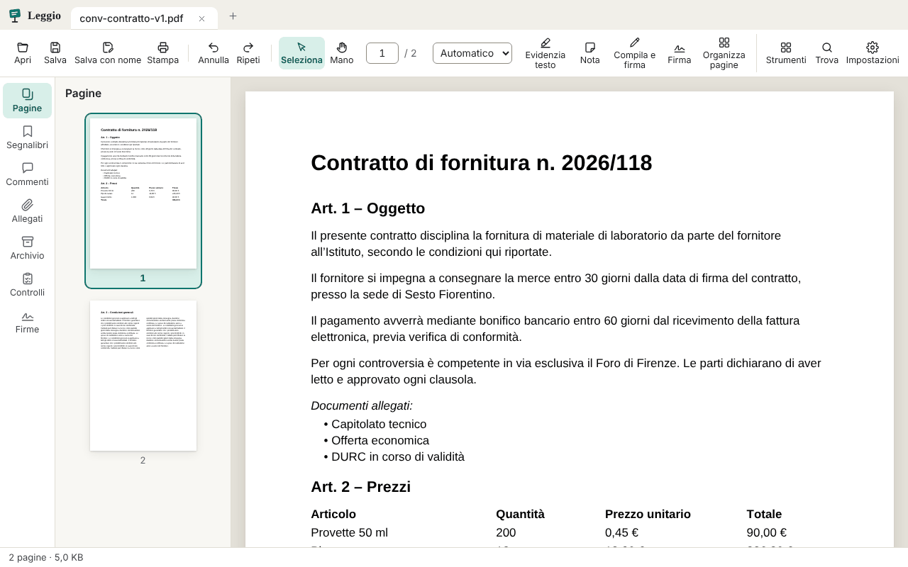
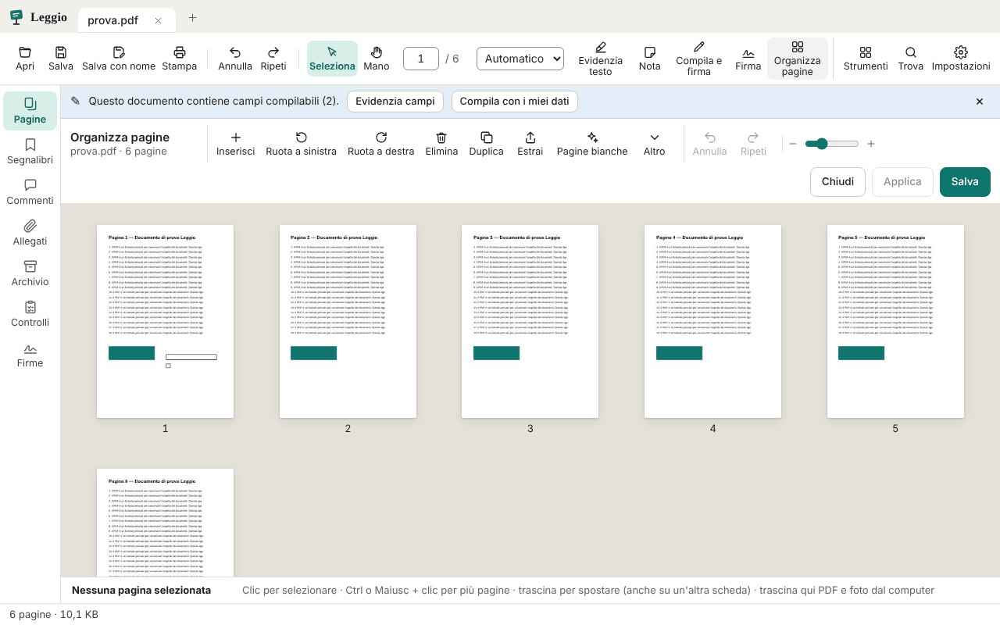

Windows 10 e 11
- Installer Leggio-versione-win-x64-installer.exe — consigliato, crea l'icona nel menu Start
- Versione portatile Leggio-versione-win-x64-portatile.exe — si avvia senza installare nulla, anche da chiavetta
Il programma per i PDF libero e gratuito: leggi, commenta, modifica, firma, proteggi e converti i tuoi documenti. Senza abbonamento, senza account, senza pubblicità. I tuoi file restano sul tuo computer.
Windows 10 e 11 · macOS 12 o successivo · Linux in arrivo.

Tutti i file dell'ultima versione. Accanto a ognuno, quando disponibile, c'è la sua impronta SHA-256 per controllare che il file sia integro.
Non sai che Mac hai? Menu Apple (la mela in alto a sinistra) → Informazioni su questo Mac: se leggi «Chip Apple M…» scegli chip Apple, se leggi «Processore Intel» scegli Intel.
Linux: presto disponibile. Nel frattempo puoi compilarlo dal codice sorgente (servono Node.js e npm run dev).
Le impronte di tutti i file sono anche nel file SHA256SUMS.txt pubblicato insieme alla versione, sulla pagina delle versioni.
L'impronta SHA-256 è una «firma» di 64 caratteri calcolata dal contenuto del file: se cambia anche un solo byte, cambia tutta. Confronta quella del file scaricato con quella mostrata in questa pagina (o in SHA256SUMS.txt): devono essere identiche.
Get-FileHash "$env:USERPROFILE\Downloads\Leggio-versione-win-x64-installer.exe" -Algorithm SHA256Il risultato è nella colonna Hash (in maiuscolo: va bene lo stesso).
shasum -a 256 ~/Downloads/Leggio-versione-mac-arm64.dmgSu Linux va bene anche sha256sum. Se hai scaricato anche SHA256SUMS.txt nella stessa cartella: shasum -a 256 -c SHA256SUMS.txt --ignore-missing.
Quando scarichi o apri Leggio per la prima volta, il browser o il sistema possono avvisarti che il file «non viene scaricato spesso» o che «lo sviluppatore non può essere verificato». Non significa che il file sia dannoso. Succede perché Leggio, per ora, non è firmato con un certificato (un certificato di sviluppatore costa ogni anno) ed è un programma nuovo, quindi Microsoft e Apple non hanno ancora «visto» abbastanza persone scaricarlo. La firma è prevista: quando ci sarà, questi avvisi spariranno.
Per stare tranquillo: scarica Leggio solo da questa pagina o dalla pagina ufficiale su GitHub, e controlla l'impronta SHA-256. Se trovi Leggio su altri siti, non usarlo.
Serve solo la prima volta.
Più PDF in schede, anche protetti da password. Zoom, vista a due pagine, modalità lettura, tema scuro. Ricerca nel testo e in tutti i PDF di una cartella. Ripara da solo i file danneggiati.
Evidenzia, sottolinea, aggiungi note, disegni, forme e timbri pronti in italiano («RICEVUTO», «PAGATO», «VISTO SI LIQUIDI»…).
Correggi un refuso con lo stesso carattere del documento, aggiungi testo, immagini e loghi. Novità: modifica il contenuto delle celle delle tabelle.
Riordina, ruota, elimina, estrai e inserisci pagine. Unisci e dividi PDF, anche per la dimensione massima della PEC. Numeri di pagina e filigrane.
Da foto e scansioni (raddrizzate e adattate ad A4), da Word, Excel, PowerPoint e pagine web.
Compila qualunque modulo, anche quelli non compilabili. Firma grafica e firma digitale con certificato o con il programma di firma già installato. Verifica delle firme.
Novità: apri i documenti firmati .p7m in modo sicuro, senza mai toccare l'originale, e vedi chi ha firmato e quando.
Password e limiti a stampa e copia. Oscuramento vero dei dati riservati (codici fiscali, IBAN, email…), anche cercandoli in automatico.
Novità: oscura i dati delle copie dei documenti d'identità con modelli pronti e aggiungi la filigrana «Copia per uso esclusivo di…».
Esporta in Word, Excel e immagini. Rende ricercabili le scansioni senza Internet. Confronta due versioni di un documento. PDF/A per la conservazione.
Fatture elettroniche impaginate, messaggi PEC con ricevute e allegati, archivio d'ufficio sulle cartelle già in uso, azioni su molti file insieme.
Annulla e Ripeti, salvataggio sicuro, recupero dei documenti non salvati, uso completo da tastiera, controllo dell'accessibilità.


Leggio funziona senza Internet e i tuoi documenti non escono mai dal computer: niente account, niente cloud, nessuna telemetria. L'unico collegamento è un controllo facoltativo degli aggiornamenti, una volta al giorno: una richiesta anonima a GitHub, senza dati personali, che puoi spegnere nelle Impostazioni.
Anche questa pagina non usa cookie, statistiche o caratteri scaricati da altri siti: chiede soltanto a GitHub l'elenco dei file dell'ultima versione.
Hai trovato un errore o hai un'idea? Scrivilo su GitHub: c'è un modulo guidato per le segnalazioni e uno per le proposte.